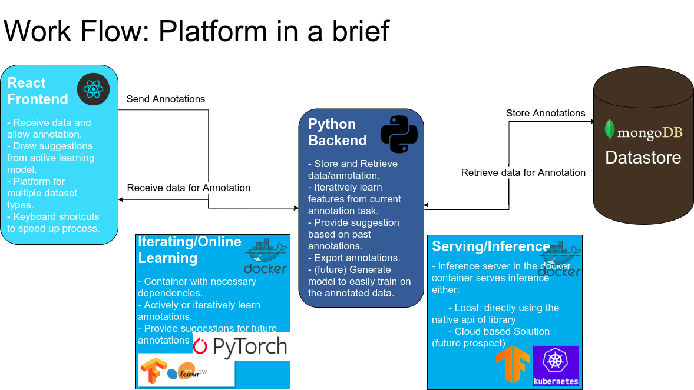
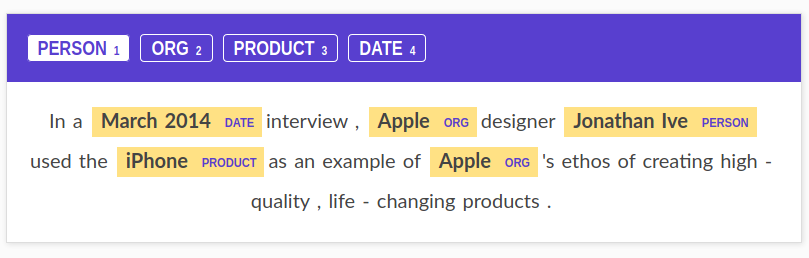
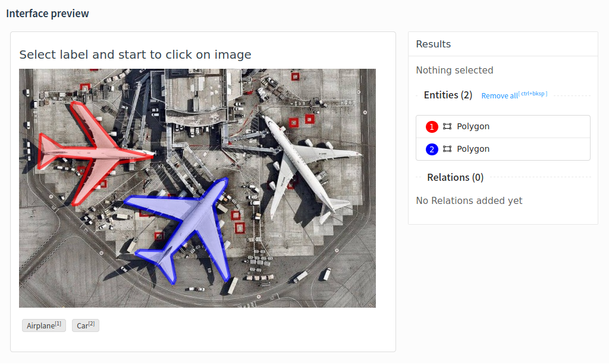
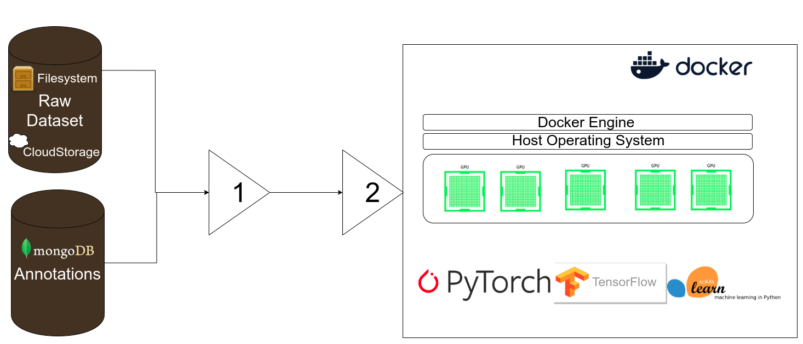

Mentors:
Ratin Kumar
Email: ratin.kumar.2k@gmail.com
Phone: +91-9896225424
| Full Name | Ratin Kumar |
| Institute | 2nd Year B.Tech StudentComputer Science and EngineeringNational Institute of Technology Kurukshetra |
| ratin.kumar.2k@gmail.comratin_11822004@nitkkr.ac.in | |
| Phone | +91-9896225424 |
| Blog | https://medium.com/@ratin.kumar.2k |
| Github | https://github.com/DumbMachine |
| Skype | RatinKumar |
| IRC Nick | DumbMachine (Freenode) |
| Timezone | Indian Standard Time (GMT +0530) |
| Address | 317, Abhimanyu Bhavan Hostel-6, NIT campus,National Institute of Technology Kurukshetra, Kurukshetra, Haryana, India 136119 |
I am Ratin Kumar, a 2nd-year undergraduate Computer Engineering student at National Institute of Technology Kurukshetra. I have good experience of using Python and Javascript for creating applications or just some hacky scripts to get things done. I really enjoy coding all the time, because of which I have numerous small projects on my Github.
Riding cycle, stalking stock market trends and competitive FPS games are some of my interests outside of the world of programming.
I am part of many organizations on Github and have made multiple minor and a few major contributions. I love the spirit of Open Source, promoting universal access to code, and thus have become the part of this amazing community. Being a part of the Open Source group at my College, I have organized workshops on GIT and using Machine Learning for Image Captioning and continually help colleagues.
Project redacted**
The field of Artificial Intelligence is helping advancement of many fields. AI is relevant to any intellectual task. Modern artificial intelligence techniques are pervasive and are too numerous to list here. Some of the prominent examples range from somethingautonomous vehicles to life saving by helping in medical diagnosis. Apart from the aforementioned serious, AI is used in entertainment industry whether it maybe using AI to create articles or create deepfakes. The world has also seen AI being used to detect the wrongs in our society, like fake news and also to detect the wrongs by AI itself (eg deepfakes).
At the heart of most AI solutions lies requirement of labeled data. The lack of labeled data makes impossible for the algorithm to learn the regularities and patterns in data. Labeling data, manually, is cumbersome and time consuming. AI solutions can be divided in two categories:
Project redacted aims at providing a platform to simplify and speedup the process of data labeling by making use of automation tools and pre-trained machine learning models. This project will provide a simple gui to users for annotating data required by various machine learning tasks (computer vision based, nlp based or audio based) and make use of pre-trained models and some techniques (mentioned in implementation details section) to allow automation of annotation to as far extent as possible. The gui will be supported by a python backend responsible for all preprocessing/recommendation for annotation and also storage of annotations received by the frontend.
CCExtractor, initially a small project, has now embedded itself firmly into large corporations and prestigious universities where it is used for many educational feats. This project will help fuel the fire of AI boom. It will introduce a tool to all the machine learning practitioners, which will allow them to annotate data a lot faster than before.
World of Artificial Intelligence has made big leaps in providing humans the power to find patterns in data. It will be the basis of most of the automation in the coming century, to keep this field expanding it requires data. Data, in its raw form, is available readily. This data accompanied with the right tool, which should focus on automatic and fast annotation, will improve efficiency of practitioners. Reduction of time spent annotating data implies increase in the time spent on finding solutions of real world problems.
redactedTo accomplish this project's aims, a simple gui and a powerful backend which learns from past annotations are required. The gui will be simple and only expose those functions that are required and allow for usage of keyboard shortcuts to allow for reaching peak of efficiency of the manual annotators. The accompanying backend will actively learn from the annotations to suggest the annotations to users passively. This passive suggestion for manual annotators will mean no amount will be spend on annotation for correct suggestion and ignoring the suggestion, if wrong hence being a passive suggestion. Currently the benefits that will served from this project can be condensed to:
redacted will allow institutes, professional or any interested party to annotate data fast and easily, leaving the party with more time for implementation of solution.
redacted?redacted?Make the world more productive.
Mentor gave me the opportunity.
A simple react-based frontend, allowing for ingestion of the following:
Computer-Vision based datasets for:
Natural-Language Processing based datasets for:
Audio based datasets for:
A robust backend which will take care of:
Tests and Continuous Integration tools.
Detailed documentation; for users as well as developers.
Fortnightly blogs on developmental advances and milestones.
Setting the ground for a Model Zoo things, to allow ingestion of Annotations and train models. Possible integration with Rekognition.
Brief show of the workflow

The project can be divided into the following components:
React based frontend: The frontend webapp, will be the component most users see and use.
Python based backend: The server responsible for providing data to react app and taking annotation data from it. The iterative learning model, which will give real time suggestions of annotations, will also be backend's responsiblity. To increase the modularity of backend's components, the following division is recommended:
Let's look at the components in more detail:
(Mockups of the proposed frontend)


(mockup for audio and video under process)
The project will come bundled together. The python server will come with a cli tool to startup all the necesarry. Currently the cli is planned to come with the following features:
x# Registering a new dataset$ project-redacted create --dataset <dataset_name> --data_directory <directory># Starting the processes$ project-redacted start --config <config_file># Create a config file$ project-redacted create_config A config file will be essential in providing information necessary for the functioning, a default config will look like:
x
# config.yamldataset_name"default_dataset"# data related optionsdata_directory<current_directory>annotation_directory<current_directory>/annotations# problem related optionsproblem_field"computer-vision"problem_sub_field"classification"classification_categoriesaeroplaneairport personnelshuttle busluggage carrier# Iterative Learning related optionstrain"true"training_approach"iterative_learning" # ∈ ["iterative_learning", "multi_onevsall_classifiers"]train_split"0.1" # At what proportions to retraintrain_framework"sklearn" # ∈ ['sklearn', 'tensorflow/pytorch']# Miscellaneous optionsfrontend_theme"dark" # ∈ ['light', 'dark']
| Duration | Task |
|---|---|
| March 31 | Deadline for submitting Project Proposal |
| March 31 - April 27 | Application Review Period |
| April 27 - May 18 | Official Community Bonding Period |
| May 18 - August | Official Coding Period StartFinish implementation of pluginTest the plugin to some sample jobs on local backend server.Perform UI tests and fix bugs. |
| June 6 - June 11 | Time period for any unexpected delay.Finish Task 1 |
| June 11 - June 15 | Phase 1 evaluationSubmit git repository of Code with documentation for Task 1 |
| June 15 - July 4 | Begin Task 2 : Integrate plugin with HTCondorImplement functionality for integrating HTCondor as backend.Test plugin for real batch jobs at CERN.Ask for feedbacks from the users and implement suggestions. |
| July 4 - July 9 | Time period for any unexpected delay.Finish Task 2 |
| July 9 - July 13 | Phase 2 evaluationSubmit git repository of Code with documentation for Task 2 |
| July 13 - August 10 | Begin Task 3 : Deploy plugin to CERN IT InfrastructureTest plugin on CERN’s batch infrastructure.Integrate plugin to SWAN Notebook service.Ask feedback from the users and implement suggestions. |
| August 10 - August 10 | Finish Task 3 Final SubmissionSubmit git repository of final code with complete documentation. |
this might be for testing and polishing.thing of AI. fastpages or anything else, that they would prefer.Classification and Object Detection. Making the base for an extension to allow for training.unittests and integration.I’ll be working full-time on the code on weekdays. On weekends, I’ll be focusing on documentation, testing and bug fixing. My awake hours would usually be in between 6:30 AM IST (1:00 AM UTC) to 2 AM IST the next day (8:30 PM UTC) and I’m comfortable working anytime during this period but I can easily tune my working hours if circumstances ask for it. Except for a few days of traveling (which I’ll be informing in advance to my mentor), I’ll be having no other absences. In case of emergencies, I'll be informing my mentor.
I'll be working from either my house or hostel, both the places have access to good internet.
I’m very flexible with my schedule and already have the habit of working at night and hence timezone variation (with my mentor) won’t be an issue. I’m comfortable with any form of communication that suits my mentor.

This is a work in progress.